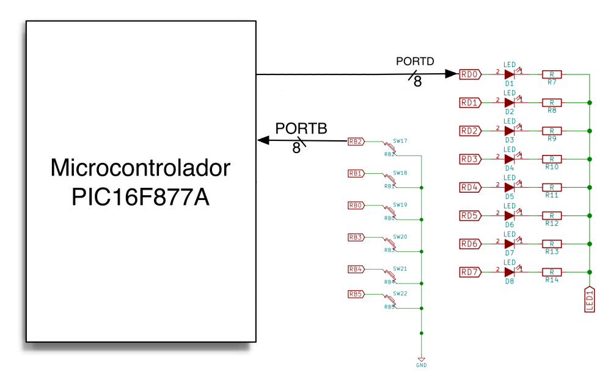

Ejercicio 4: Lectura por consulta periódica y por bloqueo de programa
1. Objetivo
El objetivo de este ejercicio es que el alumno escriba un driver de
dispositivo, en BASIC, que permita al PIC16F877A leer el estado de los
seis pulsadores individuales asociados al puerto PORTB, e indicar su
estado de activación usando la tira de LEDs conectada al puerto
PORTD.
Concretamente, el programa debe tener el siguiente comportamiento:
Mediante consulta periódica, lee el estado de
pulsación de cada uno de los botones conectados a las
líneas RB0 a RB5.
Cuando uno de los botones esté pulsado (sólo debe
haber uno pulsado, ya que en PicSimLab se pulsan usando el cursor
del ratón, que obviamente sólo puede estar sobre un
único botón en cualquier momento), se encenderá en
el puerto PORTD el LED correspondiente a su línea; así,
por ejemplo, si la tecla pulsada es la RB2 se encenderá el led
RD2, y sólamente ese.
Cuando no haya ningún interruptor pulsado, se encenderá de forma continua el LED RD7.
Variante #1
Como primera variante, si no hay ningún pulsador activo el LED
RD7 de inactividad debe parpadear (es decir, encenderse y apagarse
alternadamente)
Variante #2
En la segunda variante intentaremos obtener una estimación
visual de la diferencia en tiempo de respuesta entre consulta
periódica y bloqueo de programa. Para ello, repetimos el
programa original (RD7 fijo si no hay actividad, y se enciende el led
RDx cuando se detecte una pulsación en el botón RBx); sin
embargo, esta vez la lectura de los botones DEBE realizarse usando
bloqueo de programa (por lo que la actualización del estado de
los LEDs sólo podrá realizarse una vez se haya detectado
el cambio de estado en alguna de las líneas RBx).
2. Sistema de test
La configuración del sistema de pruebas simulador es la
mostrada en la siguiente figura:

4. Consideraciones adicionales
Para realizar este ejercício debe determinarse correctamente el
valor de configuración para los registros TRISx afectados.
Adicionalmente, debe consultarse el documento descriptivo de los
periféricos de la placa PicGenios para determinar qué dip
switches deben abrirse con el fin de desconectar de las líneas
RBx y RDx aquellos periféricos que potencialmente pueden generar
conflictos al usar estas líneas (como, por ejemplo, el reloj de tiempo real RTC).